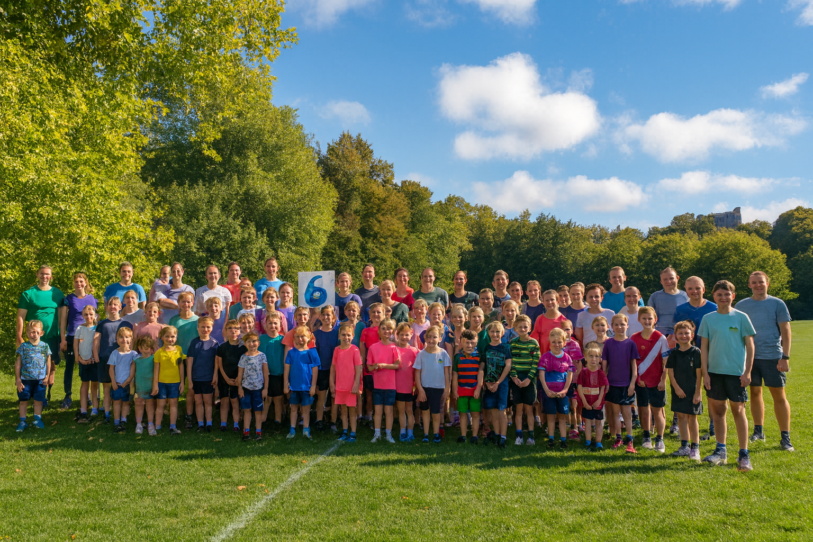
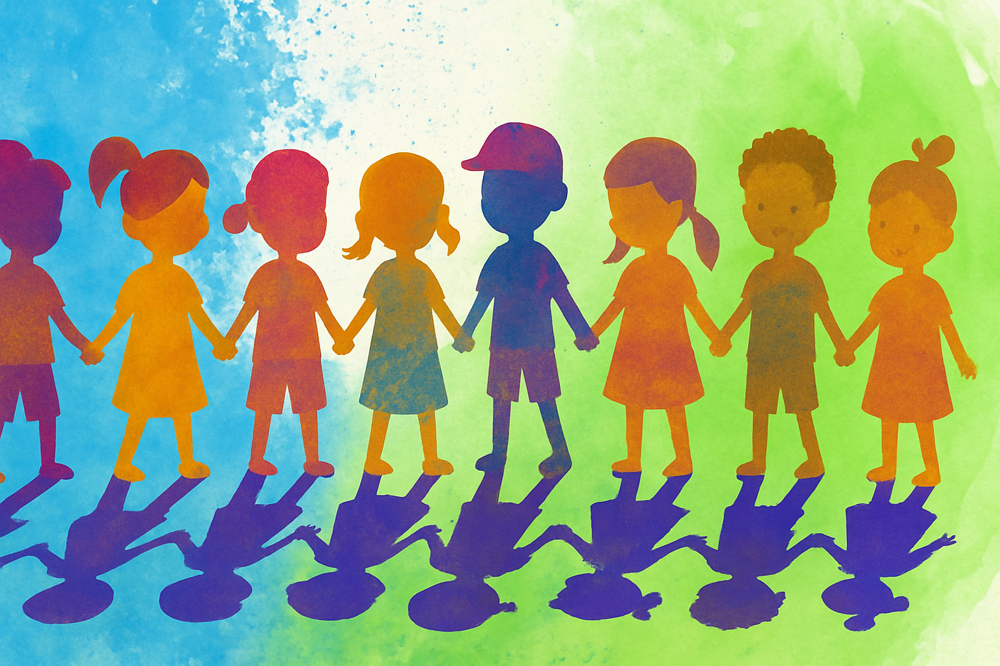

Supporting children, families, and our neighbourhood with activities, learning, and sports.
T.I.N. Junior Community Centre exists to help children grow with confidence, stay active, and build friendships. We focus on creating a safe, welcoming, and supportive environment through sports, educational activities, and community programmes.
Our goal is to make every child feel valued, included, and encouraged to learn and thrive.
Our experienced staff and volunteers inspire and guide children in a positive way.
Youth Mentor & Sports Leader
Helps children build confidence and teamwork through engaging activities.
Community Coordinator
Works closely with families and ensures all children feel supported and included.
Activity Coach
Runs sports, games, and development sessions for all age groups.

At T.I.N. Sports, we believe every child deserves a safe, welcoming space to play, grow, and discover their potential. Our junior community programmes help young people build confidence, develop teamwork skills, and form lasting friendships.
What started as a small group of volunteers has grown into a thriving youth centre offering football, cricket, basketball, volleyball, and much more. We focus on inclusion, happiness, and positive development for every child.
From a small group of volunteers to a trusted community centre.
We started with small weekend activities for children at the local park.
Introduced football, cricket, basketball, and team-building games.
More families joined, creating a stronger and more connected community.
We became a full community centre offering year-round programmes.
